Otvorené, keď máte čas
Ráno od 06:30, večer do 21:00, v piatok do 23:00. Víkend 08:00–17:00 – overte telefonicky.
GYM KLUB Fitness & Bodybuilding · Výstavná 6, Nitra-Chrenová
Bez objednávania, 6 € na recepcii. Cez týždeň od 06:30, v piatok do 23:00.
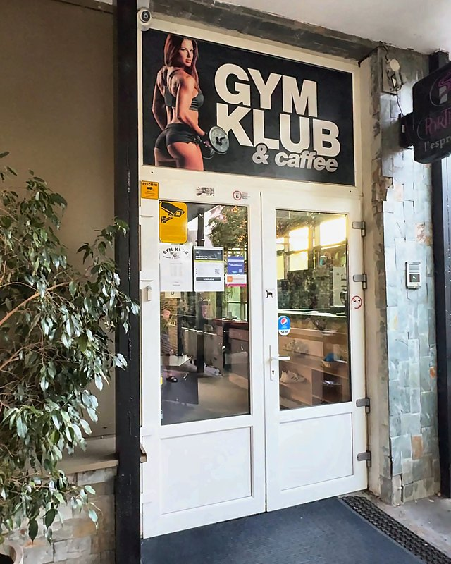
01 Vchod z Výstavnej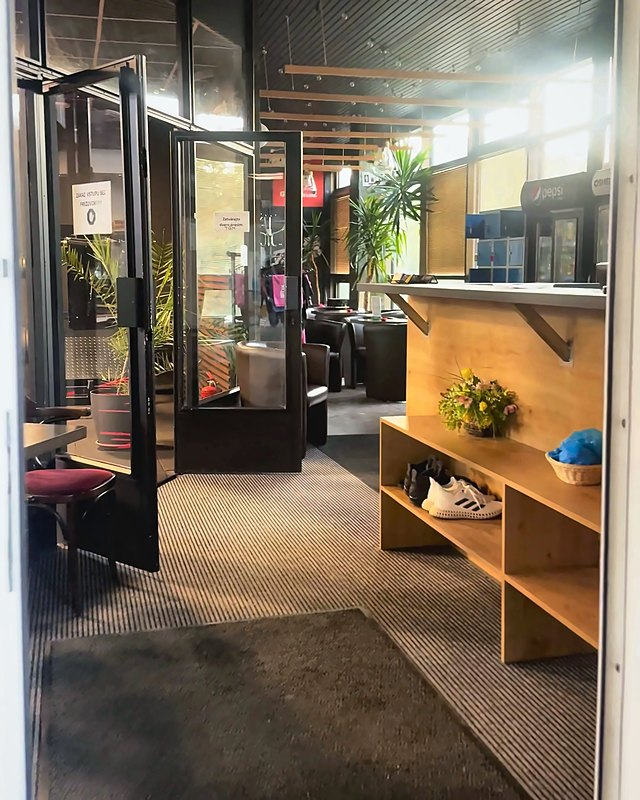
02 Recepcia a obuv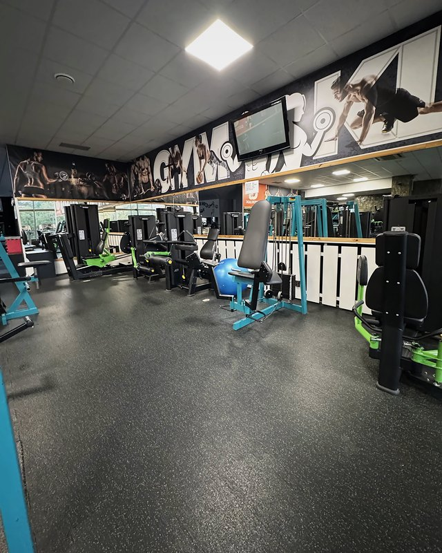
03 Štart na strojoch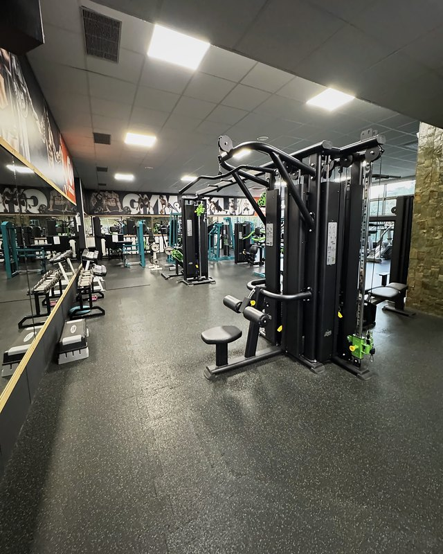
04 Veža na všetko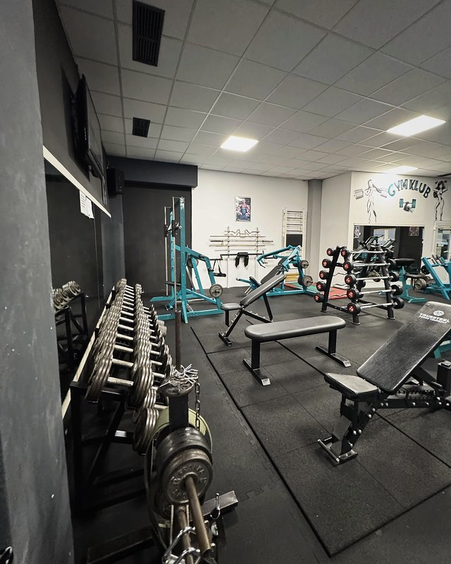
05 Voľné váhy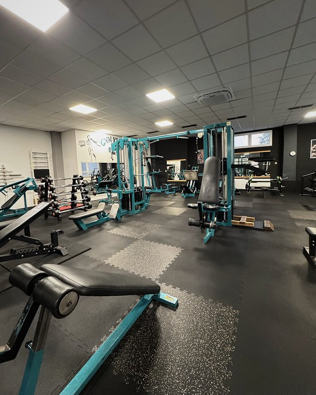
06 Svetlá sála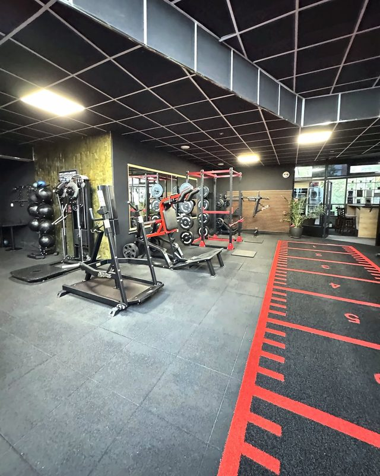
07 Šprintérska dráha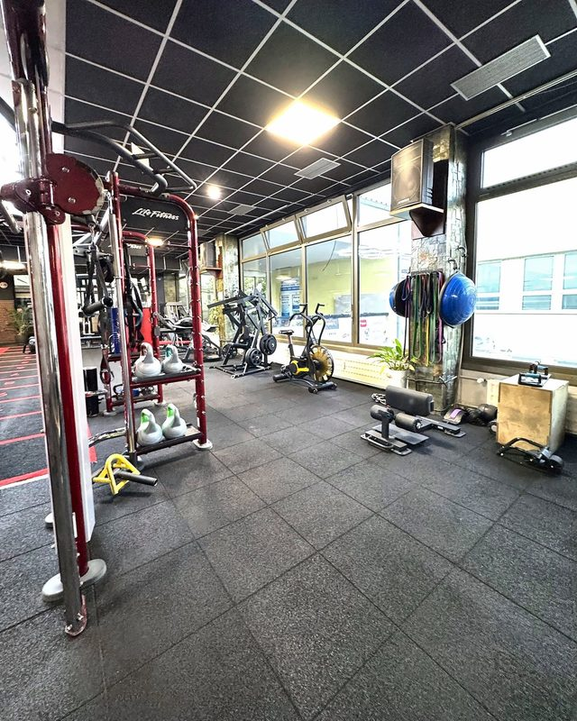
08 Rig a kettlebelly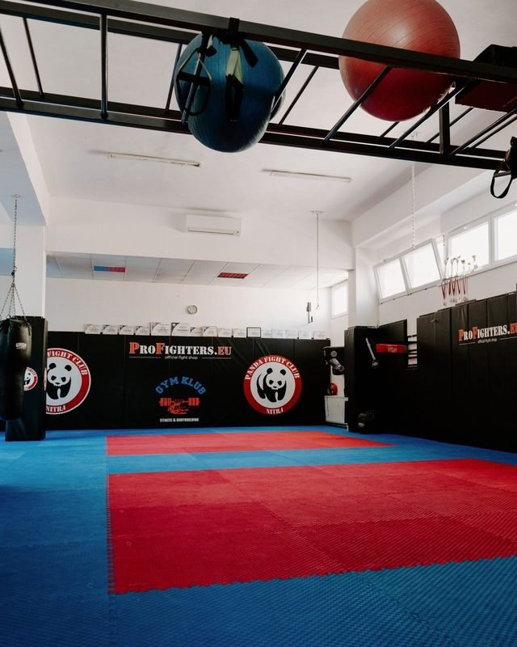
09 Panda Fight Club 10 Kardio pri oknách
10 Kardio pri oknách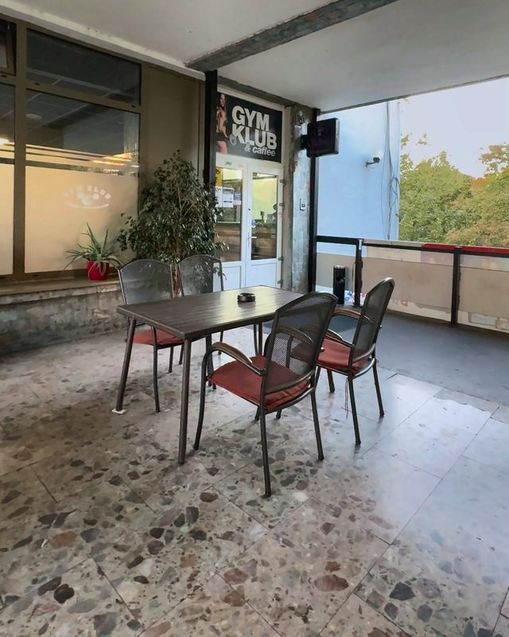
11 Krytá terasa01 Vchod z Výstavnej02 Recepcia a obuv03 Štart na strojoch04 Veža na všetko05 Voľné váhy06 Svetlá sála07 Šprintérska dráha08 Rig a kettlebelly09 Panda Fight Club10 Kardio pri oknách11 Krytá terasa01Prečo GYM KLUB
Bez objednávania, platíte na recepcii. Prídete, keď máte čas, zacvičíte a idete ďalej.
Ráno od 06:30, večer do 21:00, v piatok do 23:00. Víkend 08:00–17:00 – overte telefonicky.
Domáce prostredie a kolektív, ktorý prišiel trénovať, nie sa predvádzať. Tak to opisujú aj ľudia v recenziách na gymklub.sk.


Keď budete chcieť poradiť s technikou alebo plánom, dohodnete sa priamo s trénerom. Kým nie, nikto vás nebude naháňať.
Chcete vidieť, kam vojdete v utorok o pol siedmej večer?
Prejsť si priestor
Funkčná zóna
Rig, kettlebelly, šprintérska dráha a vzduchový bicykel na jednom mieste. Kruhový tréning si zostavíte sami alebo s trénerom.
02Priestor
Od vchodu po terasu: jedenásť záberov v poradí, ako ich uvidíte na prvej návšteve. Nech viete, kam ísť a čo si vziať.


Dvanásť ďalších miest, od jednoručiek po sálu s tatami. Detaily, ktoré si všimnete až na mieste – ukážeme vám ich vopred.


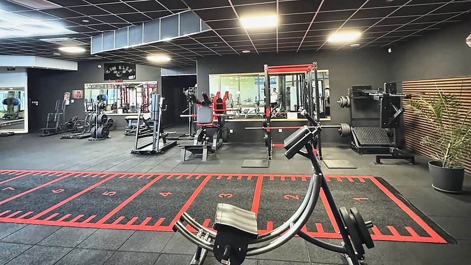


Priestor poznáte – teraz si vyberte, čo v ňom budete robiť.
Vybrať tréning03Tréningy
Sami na strojoch, s trénerom podľa plánu, alebo v skupine podľa rozvrhu. Všetky tri cesty sa začínajú na tej istej recepcii.

Samostatne · bez objednávania
Prídete, keď máte čas, a cvičíte podľa seba – voľné váhy, stroje, kardio aj funkčná zóna. Jednorazový vstup 6 €, permanentka 50 € mesačne bez obmedzenia.
Pozrieť cenník
S trénerom · po dohode
Začiatočníkom tréner nastaví techniku a napíše tréningový plán s jedálničkom. Pokročilým nutričné poradenstvo s analýzou telesného zloženia aj prípravu na súťaž vo fitness a silovom trojboji. Cenu a termín dohodnete s trénerom, alebo stačí povedať na recepcii.
Vybrať trénera
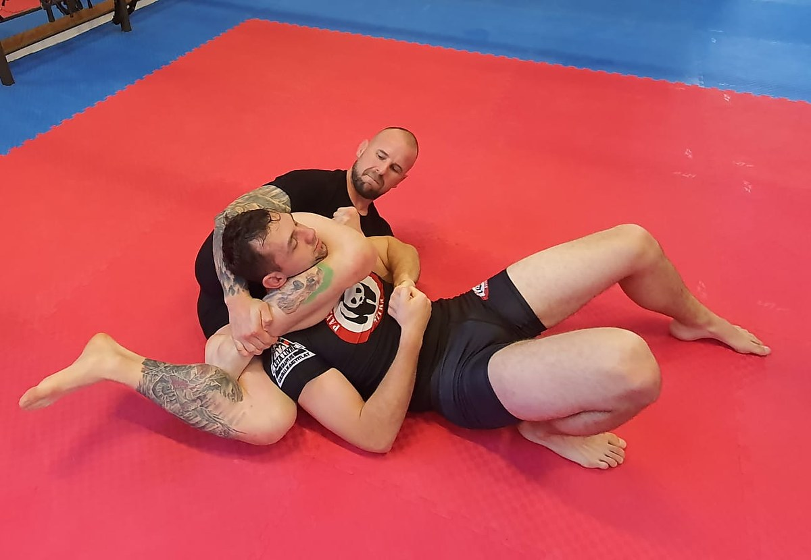
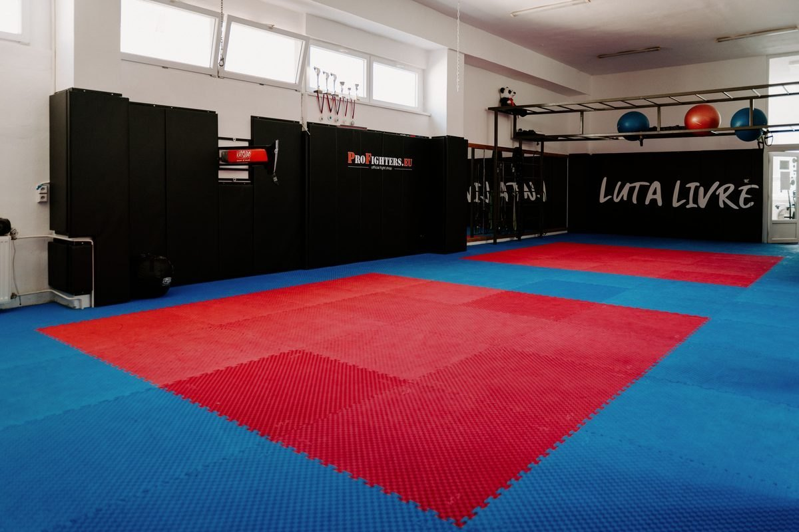

Každá lekcia má svoj deň a hodinu, prídete podľa rozvrhu. Cena lekcie nie je v cenníku fitka, povie vám ju tréner alebo recepcia.
Ut a Št 17:00–19:00 · So 13:00–15:00
Michal Šášik · Panda Fight Club
Postoj s prvkami boxu, kickboxu a juda, na zemi páky, škrtenia a obrana proti nim. Začať sa dá od úplných základov.
Po 17:00–18:30
Tomáš Židek a Slavo Juro
Praktická sebaobrana, bez predchádzajúcich skúseností. Pondelok po práci, hodina a pol.


Po 16:00–17:00 · St 18:00–19:00
Majka Navrátilová
Stabilita, mobilita a pevný stred tela. V pondelok pred večerou, v stredu po práci.

Ut a Št 18:00–19:00
Nikol Molnárová
Posilnenie trupu s malými činkami a na karimatke, mierne namáhavé. Vhodné pre začiatočníkov aj ľudí so sedavou prácou.
04Tréneri
Desať trénerov pre fitness, výživu, bojové športy, Krav Maga, pilates a zdravý chrbát. Začiatočníkom nastavia techniku a plán, pokročilým prípravu na súťaž. Osobný tréning dohodnete s trénerom, alebo stačí povedať na recepcii.

Bojové športy
MMA a Luta Livre, tréner Panda Fight Club. Postoj aj zem, od úplných základov po zápas.
0905 930 597
Fitness
Výživa a poradenstvo, kondičný a kruhový tréning, TRX, kettlebell. Kondičný box, ženský box, MMA a grappling/BJJ (fialový pás).
+421 908 484 155
Fitness
Diagnostika pohybového aparátu, správna technika, tréningový plán a jedálniček podľa cieľa. Dynamické rozcvičenie a strečing v každom tréningu.
0915 605 514
Fitness
Majster Slovenska a Československa v športovej kulturistike. Osobné a kondičné tréningy, poradca pre stravu, výživu a doplnky.
+421 907 736 944
Krav Maga
Praktická sebaobrana pre reálne situácie. Lekcia každý pondelok o 17:00.

Krav Maga
Inštruktor Krav Maga. Techniky, ktoré fungujú aj pod tlakom.

Zdravý chrbát
Cvičenie zdravý chrbát: posilnenie trupu, správne držanie tela a uvoľnenie stuhnutých svalov. Utorok a štvrtok o 18:00.
+421 948 899 131
Pilates
Pilates pre pevný stred tela, stabilitu a mobilitu. Pondelok o 16:00 a streda o 18:00.

Fitness
Osobné fitness tréningy. Kontakt dohodnete na recepcii.

Nutričné poradenstvo
Individuálne nutričné poradenstvo, analýza telesného zloženia a stravovací protokol. Osobné tréningy a príprava na súťaž vo fitness a silovom trojboji.
Ak tréner nemá uvedený telefón, dohodnite sa na recepcii alebo na +421 944 800 394.
06Cenník
Ceny bez hviezdičiek, platba v hotovosti na recepcii; MultiSport a Upbalansea ukážete pri príchode. Skupinové lekcie a osobné tréningy sú po dohode s trénerom.
Jednorazový vstup
6 €1× vstup
Prídete, vyskúšate a nič ďalšie nemusíte.
Ako prebieha prvá návštevaPermanentka klasická
50 €mesiac
Neobmedzené vstupy – pri troch tréningoch do týždňa vyjde lacnejšie než jednorazové vstupy.
Ako prebieha prvá návštevaPermanentka študent
42 €mesiac
Tá istá permanentka, nižšia cena – ráno pred školou aj večer po nej.
Ako prebieha prvá návšteva| 10 vstupov | bez viazanosti na mesiac | 50 € |
| 20 vstupov | 4 € za vstup | 80 € |
| Študent · 1 vstup | so študentským preukazom | 5 € |
| Dôchodca · 1 vstup | 3,50 € |
07Recenzie
Štyri recenzie zverejnené na gymklub.sk, doslovne. Čistota, kolektív a to, že sa tu nikto nepredvádza.
Posilňovňa bola plne klimatizovaná a tvorená kombináciou starších a novších strojov, priestor bol dobre zvetraný, príjemné prostredie, milý personál, skvelí tréneri a čisté šatne.
Čistota fitka, nové stroje a ústretový personál.
Perfektný kolektív na spoločných tréningoch!
„Old school“ posilka, domáce prostredie, fajn kolektív, žiadni „metroši“ okukujúci sa pred zrkadlami.
Zostáva jediná otázka: kedy prídete vy?
Pozrieť hodiny a kontakt08Otázky
Nie. Inštruktori s vami radi začnú trénovať aj od úplných základov. Príďte na lekciu podľa rozvrhu, prvýkrát stačí športové oblečenie a voda.
V GYM KLUBE je možné platiť len v hotovosti. Akceptujeme aj MultiSport a Upbalansea app.
Cez víkend a počas sviatkov odporúčame hodiny overiť telefonicky.
Na samostatný fitness tréning nie, stačí prísť počas otváracích hodín. Na skupinové lekcie príďte podľa rozvrhu, osobný tréning si dohodnite priamo s trénerom.
Áno. GYM KLUB ponúka osobné fitness tréningy aj tréningy bojových športov s kvalifikovanými trénermi. Kontakty nájdete v sekcii Tréneri.
Na Výstavnej 6 v Lipa Centre na Chrenovej v Nitre. Mapa a navigácia sú v kontakte nižšie.
09Kontakt
GYM KLUB Fitness & Bodybuilding
Výstavná 6 (Lipa Centrum)
949 01 Nitra, Chrenová
Otváracie hodiny
Fitness centrum. Skupinové lekcie podľa rozvrhu. Sviatky a výnimky overte telefonicky.
Mapa sa načíta pri posune sem.